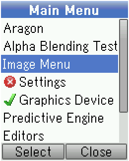
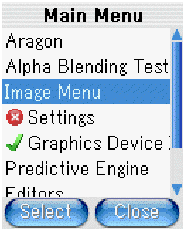
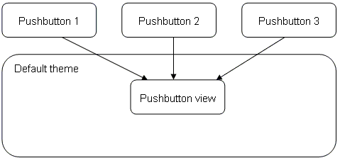

APOXI allows having a variable number of themes, which define the look of the used components like windows, push-buttons, softkeybars etc. Per default APOXI offers the themes Default Theme and Foggy Theme, which are located in Apoxi/GlobalThemes. To use a theme, it must be embedded into the implementation of the class ThemeConfig, which specifies the theme-configuration.
 
A theme-configuration using the themes Default Theme and Foggy Theme could look like this (the file ThemeConfig.cpp is located in the folder Config of the MMI-project):
ThemeConfig.cpp
#include "ThemeConfig.hpp"
#include <GlobalThemes/DefaultTheme/DefaultTheme.hpp>
#include <GlobalThemes/FoggyTheme/FoggyTheme.hpp>
const Theme& ThemeConfig::GetTheme(INT index)
{
return (index == 0) ? DefaultTheme::GetInstance() : FoggyTheme::GetInstance();
}
INT ThemeConfig::GetThemeCount()
{
return 2;
}
INT ThemeConfig::GetFontId(SystemFontId id, const Theme& theme)
{
return 0;
}
When creating a new theme, the following steps are necessary:
All components of APOXI delegate the drawing to their view-object. All instances of a component may share one instance of a view. For example one instance of the pushbutton-view is owned by the Default Theme and all instances of a pushbutton will use this instance for drawing themselfes:

The class Theme offers an abstract method GetPushButtonView(), which must return a pointer to an instance of the class PushButtonView. A derived class from PushButtonView might look like this:
MyPushButtonView.hpp
#include <Gui/PushButton.hpp>
class MyPushButtonView : public PushButtonView {
public:
MyPushButtonView();
virtual ~MyPushButtonView();
protected:
virtual void DrawPushButton(const PushButton& push_button,
DeviceContext* dc, const Rect& repaint_rect) const;
};
MyPushButtonView.cpp
#include "DefaultPushButtonView.hpp"
#include <Gui/PaintDc.hpp>
MyPushButtonView::MyPushButtonView()
{
}
MyPushButtonView::~MyPushButtonView()
{
}
void MyPushButtonView::DrawPushButton(const PushButton& push_button,
DeviceContext* dc, const Rect& repaint_rect) const
{
PaintDc pdc(dc);
// set color of background
if (push_button.IsPressed())
pdc.SetBrushColorRgb(200, 200, 200);
else
pdc.SetBrushColorRgb(120, 120, 120);
// draw filled background rectangle
XYDIM width = push_button.GetClientWidth();
XYDIM height = push_button.GetClientHeight();
pdc.FillRect(0, 0, width - 1, height - 1);
// draw text
pdc.DrawTextBox(Rect(0, 0, width - 1, height - 1),
push_button.GetAction()->GetText());
}
[ Previous: Device Context ] [ Next: Multilingual Support ]